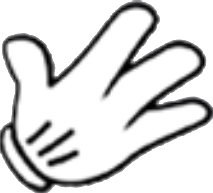
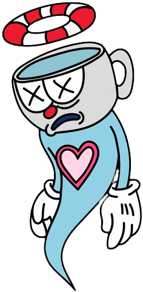

"XÍCARAS TRINCADAS?"
Qual terá sido o desfecho da história de Xicrinho?
Em um momento de aperto financeiro, Xicrinho se depara com uma atraente oferta ao ouvir uma chamada de um cassino na sua televisão. Decidido a tentar a sorte, reúne suas últimas moedas e parte rumo ao estabelecimento, ansioso por uma possível reviravolta em sua situação.
Ao adentrar o imponente cassino, a peculiar aparência de Xicrinho atrai olhares curiosos e alguns risos sutis. Determinado a não se deixar abalar, ele enfrenta desafio após desafio, gradualmente ganhando a admiração de todos, inclusive do enigmático proprietário, o notório Rei Dado.
COMO JOGAR?
JO

KEN
PO
O QUE É JO-KEN-PO?
O Jokenpo é um jogo simples que envolve gestos feitos com as mãos. Os três gestos básicos são: Pedra (punho fechado), Papel (mão aberta) e Tesoura (dedos indicador e médio esticados). Cada gesto vence um dos outros dois: Pedra amassa a Tesoura , Tesoura corta o Papel , e o Papel embrulha a Pedra. Quando ambos os jogadores fazem o mesmo gesto, é um empate. Nessa última aposta de vida de Xicrinho você deverá: PASSO 1: escolher seu movimento podendo ser jo ken ou po PASSO 2: aguardar o movimento do Rei dado PASSO 3: aguardar o resultado do round e repetir o mesmo no próximo round. VENCE QUEM FIZER 3 PONTOS PRIMEIRO
VOCÊ PERDEU
Até diria que você jogou bem mas estaria mentindo! Corrupto sim, mentiroso jamais.
>Jogar Novamente<YOU WIN